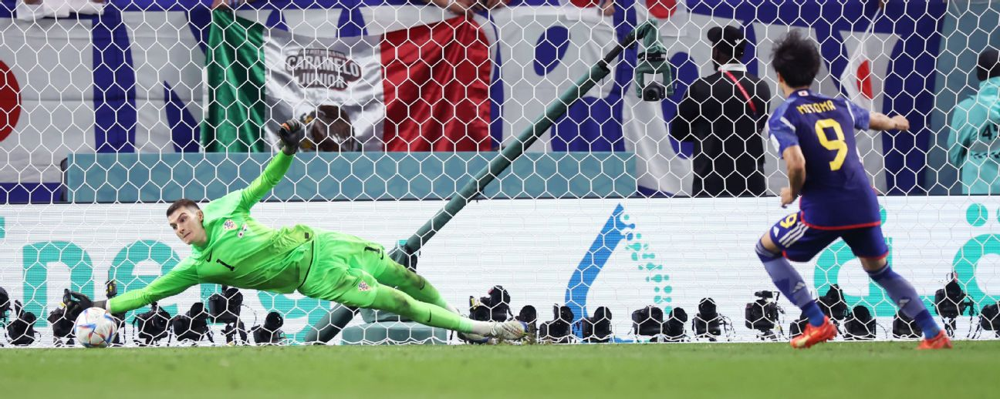
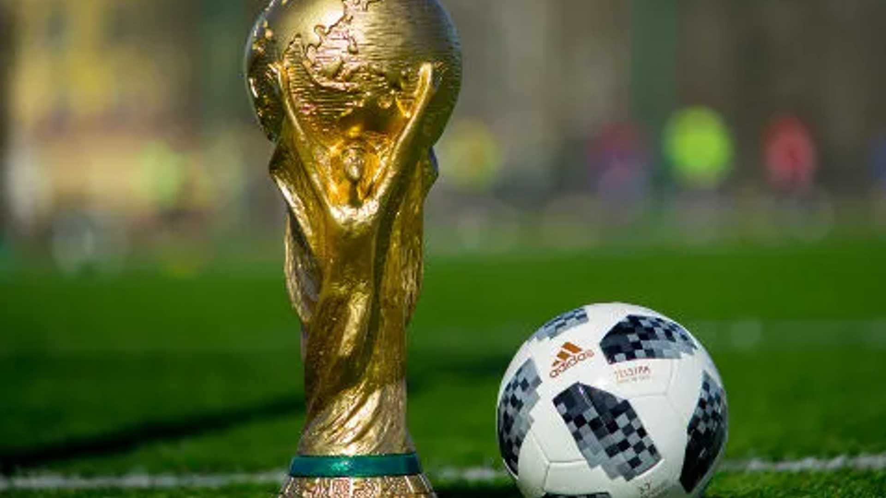
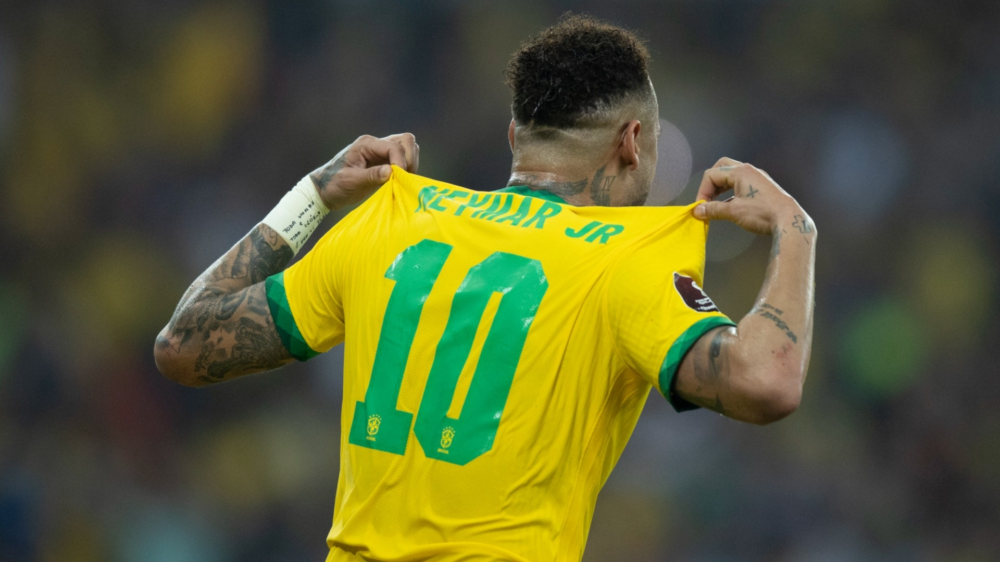

O Grupo F da Copa do Mundo FIFA 2022 acontecerá de 23 de novembro a 1 de dezembro de 2022. O grupo é formado pela Bélgica, Canadá, Marrocos e Croácia. As duas melhores equipes avançam para as oitavas de final.
Terceira colocada da Copa do Mundo de 2018, a Bélgica chega para o Mundial do Qatar com a 'última chance' de uma ótima geração marcada por grandes jogadores
Luka Modric, Eleito o melhor jogador do mundo em 2018, Luka Modric, de 37 anos, mantém o seu bom futebol e é o camisa 10 da Croácia
No Mundial do Qatar, a seleção surpreendeu e avançou na liderança do Grupo F, vencendo dois jogos (Bélgica e Canadá) e empatando um (com a Croácia).
A Seleção Canadense chega para a Copa do Mundo 2022 após 36 anos, desde 1986 que não participava. O país faz parte da América do Norte, ao lado de Estados Unidos e México.
O Qatar estreia neste domingo na Copa do Mundo, contra o Equador, pela abertura do torneio. Como país-sede, a equipe pode aproveitar o cenário para surpreender no Mundial
A Seleção Brasileira de Futebol inicia seus treinamentos em Turim, na Itália, na próxima segunda-feira (14), no CT da Juventus, de olho na Copa do Mundo do Catar.